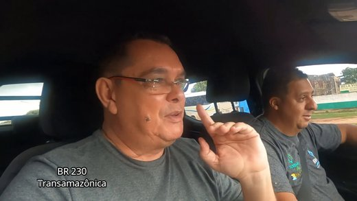

00:00:16.720
O apresentador gesticula no banco do passageiro, com o motorista ao lado e o letreiro BR-230 Transamazônica no canto da imagem.
Uruará (PA) · confirmado
O apresentador introduz a etapa entre Uruará e Medicilândia como parte de uma viagem maior rumo a Parauapebas.
Transcrição · 00:00:07 | 00:00:13 | 00:00:22
Turismo Aqui — quadro de vídeo publicado no YouTube